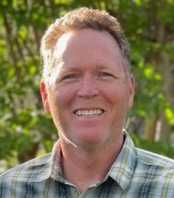

John Landers
Chief Enterprise Architect, Healthcare Systems Integration
30+ years building the integration backbone of enterprise healthcare systems. Architected the XNet platform now running five health systems in production, and founded an integration-software company whose product is still in production two decades after it was acquired. GSD brings him in for interface engines, patient matching, and systems that have to talk to each other.